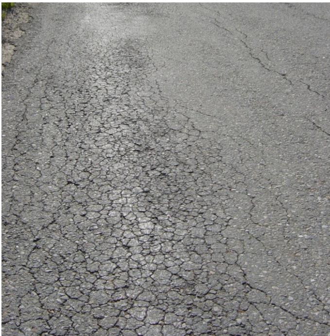
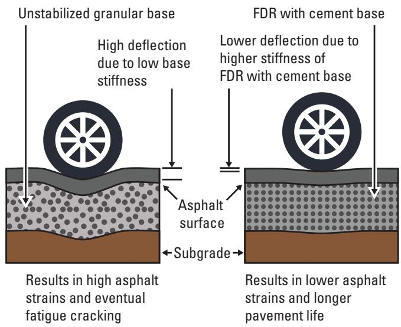
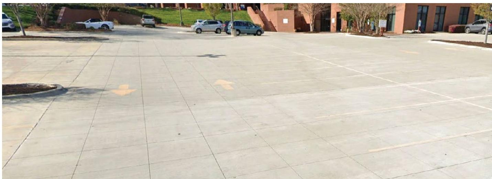
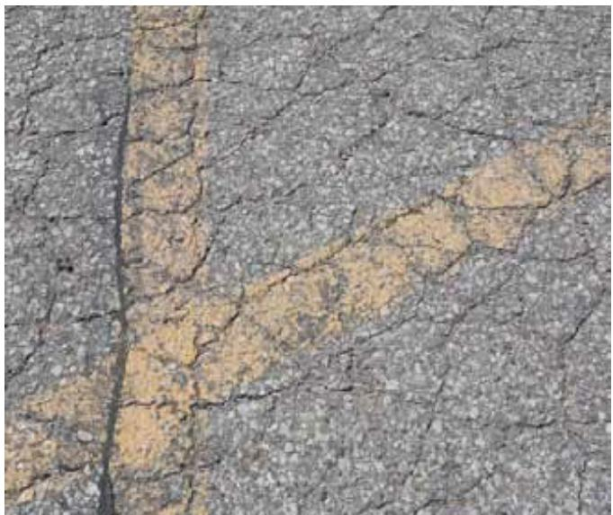
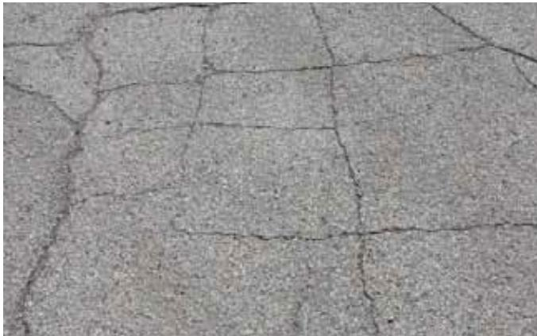
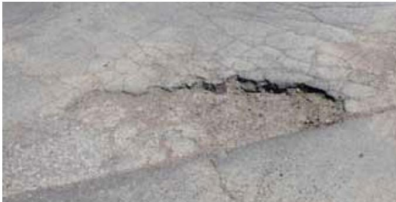

Thermal and Fatigue Cracking in Asphalt Pavement
Thermal and fatigue cracking are the two principal distresses that degrade asphalt pavements, arising from environmental temperature swings and repeated traffic loading respectively[2][6]. In cold weather the binder oxidizes and hardens, causing contraction and brittleness that generate thermal cracks when tensile stresses exceed the pavement’s capacity; fatigue (alligator) cracking initiates where tensile stresses are greatest—often at the bottom of thin or weak layers—and propagates upward as an interconnected network of cracks under repeated wheel loads[2][5][6]. Low‑to‑medium severity is identified by crack openings ≤¾ in. with only slight spalling and no pumping, whereas high‑severity cracking exhibits openings greater than ¾ in., vertical distortion, movable pavement pieces, or pothole formation that compromise structural integrity and limit overlay options[2][6].
Sources (6)
Purpose and treatment objectives
The treatment targets cracking distress in asphalt pavements that originates from both temperature‑induced contraction and repeated traffic flexure. Cold temperatures produce thermal stresses in asphalt pavement, and When the temperature drops significantly, the asphalt binder becomes brittle and thermal cracking initiates. Thermal cracking is a common form of asphalt pavement deterioration in cold climates; This type of distress is primarily caused by shrinkage of the asphalt during low temperatures combined with hardening of the asphalt binder. The loads from vehicle wheels cause asphalt pavements to flex slightly, potentially resulting in fatigue cracking. Alligator cracking is a series of interconnected cracks caused by fatigue failure of the asphalt surface under repeated traffic loading, and Random cracking consists of diagonal, transverse, and longitudinal cracks. Generally, potholes are the end result of severe fatigue alligator cracking, and Potholes are small, bowl‑shaped depressions in the pavement surface that penetrate all the way through the asphalt down to the subbase course. [2][6]
The following figure illustrates a common repair method for these distresses, showing asphalt pavement with patching.
 Asphalt pavement with patching [2]
Asphalt pavement with patching [2]
The image displays a two-lane asphalt road surface characterized by multiple areas of distress, including large potholes and irregular patches.
[2] — Ch. 3 (pp. 39–41); [6] — App. A (pp. 53–59)
Distress characterization and causes
Alligator (fatigue) cracking typically originates at the bottom of thin asphalt layers where tensile stresses are greatest, although surface cracks can later appear as binder ages or during spring‑thaw weakening. The distress forms an interconnected network that may be confined to a localized area or extend across a lane, creating a complete crack system. Severity is described on a low‑to‑medium scale—characterized by slight spalling and no loose pieces—to high severity, which exhibits vertical depressions, severe spalling, movable fragments and pumping that irregularize the pavement profile. Because the mechanism is driven by repeated traffic loading, conditions such as thinner sections, larger loads, wet subbases or spring‑thaw reduce the number of load cycles required for propagation, leading to relatively rapid progression. The resulting displaced material and surface depressions degrade ride quality and create safety hazards: fragments can shift under traffic, the profile becomes uneven, and the pavement may become unsuitable for overlay without repair. [2][6]
The figure below illustrates an example of this distress pattern in asphalt pavement.

Asphalt pavement with extensive alligator cracking [2]The image displays a section of asphalt pavement characterized by an interconnected network of cracks forming irregular, polygonal shapes.
[2] — Ch. 3 (p. 39); [6] — App. A (pp. 54–55)
Fatigue (alligator) cracking in asphalt pavement is driven by several interrelated mechanisms: repeated heavy traffic loading accelerates crack initiation, especially when the surface or underlying layers are weak or thin, reducing structural capacity; inadequate drainage allows moisture to infiltrate and weaken the subbase/subgrade, further lowering support; and oxidation of the binder ages the asphalt, making it brittle and more prone to tensile failure. In cold‑weather regions, inadequate subbase drainage allows water to accumulate beneath the paved shoulder or widening, and freeze‑thaw cycles cause that saturated layer to expand and lift the pavement vertically. The resulting heave removes structural support from the overlay and tie‑bar connection, so when heavy traffic loads are applied longitudinal cracks develop just off the tie bar, accelerating distress in the asphalt surface. Thermal and fatigue cracking in asphalt pavement are driven by a combination of environmental, material‑related, and structural mechanisms. Extreme temperatures cause the binder to oxidize and harden, reducing its ability to expand and contract with temperature swings; this stiffness creates tensile stresses that exceed the pavement’s capacity, initiating thermal cracks. Cold‑weather shrinkage further contracts the binder while water that infiltrates through these cracks softens the underlying subgrade or subbase, diminishing structural support and allowing frost heave to impose additional tensile forces. Weak or insufficiently thick surface, base, or subgrade layers lower the pavement’s load‑bearing capacity, so repeated traffic loads generate high tensile stresses at the bottom of thin sections, leading to fatigue (alligator) cracking that propagates toward the surface as longitudinal cracks. Excessive loading—especially from heavy axle loads whose damage grows with the fourth power of weight—amplifies stress magnitude and duration, accelerating both rutting and crack formation. Binder aging through oxidation further stiffens the mix, while poor drainage permits moisture to remain in the support layers, compounding loss of support and promoting crack propagation. [2][5][6]
The following figure illustrates how unstabilized asphalt bases concentrate stress on the subgrade compared to full-depth reclamation with cement.
 Comparison of stress distribution in unstabilized versus stabilized pavement bases under wheel load. [2]
Comparison of stress distribution in unstabilized versus stabilized pavement bases under wheel load. [2]
The figure illustrates a cross-section comparison between an ‘Unstabilized granular base’ and an ‘FDR with cement base’, both topped by an asphalt surface layer subjected to a tire load. In the unstabilized configuration, stress arrows are depicted as concentrated and penetrating deeply into the subgrade, whereas in the stabilized configuration, the stress is shown distributed more broadly across a wider area of the subgrade.
[2] — Ch. 3 (p. 39); [5] — 5. Condition assessment profile (p. 39); [6] — App. A (pp. 53–59)
Applicability and treatment selection
Fatigue (alligator) cracking is most likely when the asphalt layer is thin and the underlying base or subgrade is weak or moisture‑saturated, so that repeated traffic loads generate high tensile stresses at the bottom of the pavement; these factors reduce the number of load cycles needed for failure. Poor drainage, binder aging from oxidation, and seasonal weakening during spring thaw further increase susceptibility, producing an interconnected network of surface cracks that may propagate upward under such combined pavement, traffic, environmental, and site conditions. [2]
The figure below illustrates how using a cement-stabilized base in full-depth reclamation can reduce fatigue cracking compared to an unstabilized base.

Comparison of pavement deflection and fatigue cracking potential between unstabilized granular base and FDR with cement base. [2]The figure illustrates a side-by-side comparison of two pavement structures under wheel loading: an unstabilized granular base on the left and a full-depth reclamation (FDR) with cement base on the right. The unstabilized base exhibits high deflection due to low stiffness, resulting in high asphalt strains and eventual fatigue cracking, whereas the FDR with cement base shows lower deflection due to higher stiffness, leading to lower asphalt strains and longer pavement life.
[2] — Ch. 3 (p. 39)
Thermal‑fatigue cracking makes a concrete overlay unsuitable when the distress is extensive. If severe alligator cracking is predominant throughout the project area, the parking lot is not a good candidate for a concrete overlay. In such cases the recommended alternative is full reconstruction with subbase/subgrade repair. Consideration should be given to constructing a new pavement, including repairs to the subbase/subgrade where necessary. When random cracks have widened beyond the overlay’s aggregate size—generally between three‑quarters and one‑and‑half inches—or when vertical movement creates openings larger than 1½ in., an overlay will not perform. fill any crack between ¾ in. and 1½ in. wide with fly ash slurry, concrete grout, or other nonasphalt material and, if the cause is subgrade or drainage related, If a subgrade or drainage issue is the cause, stabilize and drain the existing asphalt pavement prior to filling the crack before any further preservation treatment. [6]
The following figure illustrates the decision-making process for determining whether to use a bonded or unbonded concrete overlay.

Concrete overlay of asphalt parking lot with 4 ft by 4 ft panels [6]The image displays a paved surface divided into large, square concrete panels separated by visible joints.
[6] — App. A (pp. 54–59)
Condition assessment and timing
A visual pavement condition survey is the primary inspection used to determine where thermal and fatigue cracking require treatment. The inspector walks the surface and records the type of cracking (alligator/fatigue, thermal, or random), pattern, and any associated distress such as spalling, pumping, or movement of pavement pieces. Each observed crack is measured for opening width with a calibrated gauge and noted for sealing condition and any vertical or horizontal displacement.
For fatigue (alligator) cracking the guides define it as “Alligator cracking is a series of interconnected cracks caused by fatigue failure of the asphalt surface under repeated traffic loading.” Low‑to‑medium severity is identified when an area of interconnected cracks forms a complete system with little spalling and no pumping. The guides provide two equivalent descriptions: “Low- to medium-severity alligator cracking (Figure A-2) appears as an area of interconnected cracks forming a complete system. The cracks may be slightly spalled, but no pumping or loose pieces are evident.” and “An area of interconnected cracks forming a complete system; cracks may be slightly spalled; no pumping or loose pieces are evident.”
High‑severity fatigue cracking is recognized by pockets of vertical surface depressions, severe spalling, and movable pavement pieces. Both descriptions are retained: “High-severity alligator cracking (Figure A-3) appears as pockets of vertical surface depressions, along with small, severely spalled, interconnected cracks forming a complete pattern; pieces of pavement may move when subject to traffic.” and “Pockets of vertical surface depressions, along with small severely spalled interconnected cracks forming a complete pattern; pieces may move when subject to traffic; when pumping is evident, the roadway profile has dropped or is irregular.”
Thermal cracking assessment also relies on measured crack width and sealing condition. Low‑to‑medium severity thermal cracks are “Low- to medium-severity thermal cracks (Figure A-10) are ¾ in. wide or less or are wider but sealed.” High‑severity thermal cracks exceed three‑quarters of an inch and show vertical distortion: “High-severity thermal cracks (Figure A-11) are more than ¾ in. wide with vertical distortion.”
The combined observations from these visual inspections, width measurements, and condition notes enable the evaluator to locate sections needing repair. [2][6]
[2] — Ch. 3 (p. 39); [6] — App. A (pp. 54–59)
The guides advise that remedial action for thermal and fatigue cracking should be started when the pavement reaches a low‑to‑medium severity stage, which is identified by an area of interconnected cracks forming a complete system, with only slight spalling (if any) and no evidence of pumping or loose pieces. At this level, alligator (fatigue) cracking shows the same pattern, and thermal cracking is limited to cracks ¾ in. wide or less (or wider but sealed); a concrete overlay can be placed without any pre‑overlay repairs. When distress advances to high severity—marked by vertical surface depressions, severely spalled cracks that move under traffic, visible pumping, or thermal cracks exceeding ¾ in. with vertical distortion—spot‑patching of the deteriorated zones is required before an overlay, and if severe alligator cracking dominates the area the pavement may not be a suitable candidate for an overlay. [2][6]
[2] — Ch. 3 (p. 39); [6] — App. A (pp. 54–58)
Materials and repair details
Thermal and fatigue cracking are classified by crack width. Low‑to‑medium severity cracks are ≤¾ in. wide; high‑severity cracks exceed ¾ in. and may show vertical distortion or movement. “Low‑to‑medium thermal cracks (Figure A‑10) are ¾ in. wide or less or are wider but sealed.” For low‑to‑medium cracks (≈½ – ¾ in.) the repair is a simple fill: if the opening is less than the maximum aggregate size of the planned overlay, fill it with compatible asphalt filler; if larger, “If the width of a crack is greater than the maximum aggregate size of the overlay, fill the crack with fly ash slurry or concrete grout” to keep moisture out of the subgrade. High‑severity fatigue (alligator) cracking requires removal of all deteriorated material to the full pavement depth and placement of a concrete patch. “Use a pavement saw extending at least 1 ft outside the distressed area to outline the concrete patch.” The damaged subbase or subgrade must be repaired, and the void is filled with concrete during overlay construction; when firm support cannot be achieved, sub‑base excavation or installation of a drainage system may be required. Random (fatigue) cracking can also be treated with a concrete overlay provided any vertical or horizontal movement has been corrected to avoid reflective cracking. “High‑severity thermal cracks (Figure A‑11) are more than ¾ in. wide with vertical distortion.” Cracks >¾ in. that exhibit movement are high‑severity and may require additional subbase support or drainage improvements before overlay placement. Cracks wider than 1½ in. with noticeable vertical movement must have the underlying cause identified and the subgrade stabilized prior to any filler. [6]
[6] — App. A (pp. 54–59)
The performance of thermal and fatigue cracking is governed by the condition of the binder, the structural support beneath the surface, and the geometric relationship between existing cracks and any overlay material. A binder that has become “Dried-out asphalt binder from oxidation (aging)” loses flexibility, so when temperatures drop it contracts more than the aggregates and becomes brittle; conversely, high heat accelerates the same oxidative stiffening, as noted by “Paradoxically, high heat and strong sunlight also cause the asphalt to oxidize, making it stiffer, less resilient, and more susceptible to cracking.” These material changes interact with pavement thickness and subgrade moisture: “The larger the load, and the thinner the asphalt, and the wetter subbase/subgrade, the fewer number of loading cycles is needed to cause failure.” To ensure that an overlay can effectively mitigate existing distress, the crack geometry must be compatible with the new surface aggregate size; therefore, “If the width of a crack is greater than the maximum aggregate size of the overlay, fill the crack with fly ash slurry or concrete grout to prevent entry of moisture into the subgrade.” Maintaining adequate thickness, using a non‑oxidized binder, providing proper drainage, and matching crack dimensions to overlay aggregates are the key compatibility requirements that control thermal and fatigue cracking performance. [2][6]
[2] — Ch. 3 (pp. 39–41); [6] — App. A (pp. 53–59)
Treatment procedures
Begin by cleaning the pavement surface and assessing each crack. For low‑ to medium‑severity thermal or fatigue cracking, follow the guideline that “cracks up to about three‑quarters of an inch wide are filled with a compatible sealant,” using a sealant compatible with the intended overlay. When a crack exceeds the maximum aggregate size of the overlay, apply the rule that “any crack wider than the overlay’s maximum aggregate size must be sealed with fly ash slurry or concrete grout to keep moisture out of the subgrade.” For high‑severity fatigue (alligator) cracking, first implement the step that “For high‑severity fatigue (alligator) cracking, the pavement must first be sawed around the distressed zone with a cut extending at least one foot beyond the cracks,” then proceed to “then all deteriorated asphalt is removed to the full thickness and any damaged base or subgrade is repaired.” After removal, verify firm support; if necessary, excavate the subbase or install drainage before placing the overlay. Fill the cleaned cavity with concrete as part of the overlay, avoiding asphalt patches because they will not bond to the concrete overlay. For cracks between three‑quarters and one‑and‑a‑half inches wide, use fly ash slurry, concrete grout, or another non‑asphalt filler, and if vertical movement is observed in openings larger than 1½ inches, first stabilize and drain the pavement before any filling. [6]
[6] — App. A (pp. 54–59)
The guides agree that repair activities for thermal and fatigue cracking should be timed to avoid periods when the pavement is most vulnerable. Asphalt pavements weakened during the spring thaw are more susceptible to fatigue failure at that time than they are during the rest of the year, so work is preferably scheduled outside the thaw period. Cold temperatures also produce thermal stresses; when temperature drops significantly the binder becomes brittle and thermal cracking can initiate.
Implementation follows a defined sequence. For high‑severity fatigue (alligator) cracking the first step is spot‑patching: a pavement saw is used to cut a perimeter at least 1 ft beyond the distressed zone, delineating the area for full‑depth removal. If the repair is isolated, the deteriorated asphalt is completely removed to the full depth and any damaged subbase or subgrade is repaired before a new overlay (or concrete slab where appropriate) is placed. This sequence must be completed prior to placing an overlay because severe cracking can disqualify the surface from receiving a concrete overlay.
Equipment therefore includes a pavement saw capable of extending at least 1 ft beyond the crack zone, tools for full‑depth removal, and standard placement equipment for new asphalt or concrete layers. The guides note that wet subbase or subgrade conditions reduce the number of load repetitions needed to cause fatigue failure, reinforcing the need to address moisture issues during the repair sequence.
Traffic control measures are not detailed in the sources; however, lane closures or restrictions must be planned according to standard safety practices for saw cutting, full‑depth removal, and material placement. [2][6]
[2] — Ch. 3 (p. 39); [6] — App. A (pp. 54–58)
Quality and workmanship
The inspector should begin by assessing the material condition of the existing asphalt, looking for signs such as binder oxidation that indicate aging (“Dried-out asphalt binder from oxidation (aging)”). Structural factors must also be verified – pavement thickness, subbase/subgrade strength, moisture content and drainage adequacy – because they govern the tensile stresses that produce fatigue failure. When cracks are present, each random crack’s width must be measured and any vertical or horizontal movement noted: low‑ to medium‑severity cracks are ≤¾ in. wide with no historic movement, while wider cracks showing movement are high‑severity and demand correction of underlying causes before an overlay (“Low- to medium-severity random cracks (Figure A-12) are ¾. in. wide or less and exhibit no historical vertical or horizontal movement.”; “High-severity random cracks (Figure A-13) are more than ¾ in. wide and exhibit historical vertical or horizontal movement.”). For alligator (fatigue) cracking, the inspector must recognize that it is a network of interconnected cracks caused by repeated traffic loading (“Alligator cracking is a series of interconnected cracks caused by fatigue failure of the asphalt surface under repeated traffic loading.”). If severe alligator cracking is observed, preparation requires cutting at least one foot beyond the distressed zone, removing the deteriorated asphalt to full depth, repairing any damaged support layers, and placing a concrete patch to ensure proper bonding with an overlay. In low‑to‑medium severity areas, repair may be omitted but verification of loading levels and surface integrity is still required before installation. Throughout, the condition of the subbase/subgrade should be inspected for reduced support or shrinkage due to dry or cold weather, as these factors can precipitate both thermal and fatigue cracking. [6]
[6] — App. A (pp. 54–59)
The guides agree that a satisfactory condition for thermal and fatigue cracking is defined by low‑to‑medium severity. Under this classification, alligator (fatigue) cracking may be present but must remain limited to cracks ≤ ¾ in. wide with raveled edges; only slight spalling is permitted and there must be no evidence of pumping, loose pavement pieces, or vertical surface depressions. Block, transverse, thermal, or random cracks are also acceptable when their width does not exceed ¾ in.; wider thermal cracks are permissible if they have been sealed, and low‑to‑medium random cracks must show no historical vertical or horizontal movement. Any crack between ½ in. and ¾ in. should be filled, but no pre‑overlay repairs are required when the above limits are met. Potholes that do occur in association with fatigue cracking must be shallow—no deeper than 1 in.—and confined to a small isolated area within asphalt that is at least 4 in. thick. Exceeding these dimensional limits or displaying pronounced depressions, severe spalling, moving fragments, pumping, or vertical displacement elevates the condition to high severity and fails acceptance. [2][6]
The figure below illustrates a typical example of low- to medium-severity alligator cracking that meets these acceptance criteria.

Low- to medium-severity alligator cracking in asphalt pavement [2]The image displays a close-up view of an asphalt surface characterized by an interconnected network of cracks forming irregular, block-like shapes.
[2] — Ch. 3 (pp. 40–41); [6] — App. A (pp. 54–59)
Performance and service life
Across the guides, thermal‑related block cracking and fatigue‑induced alligator cracking are described as the primary mechanisms that deteriorate asphalt pavement. Alligator cracking creates a network of interconnected surface cracks that can spall, develop vertical depressions, and eventually break the slab into small pieces that are dislodged by traffic, forming potholes. This loss of surface continuity markedly reduces ride quality, compromises the pavement’s ability to carry loads smoothly, and accelerates structural degradation, especially on thin overlays where pothole formation is most common. Block cracking similarly segments the surface into rectangular pieces as the binder hardens and can no longer expand‑contract with temperature cycles; widening cracks beyond three‑quarters of an inch signal high severity. In both cases, the emergence of large or deep depressions shortens durability and curtails the expected service life, often rendering the pavement unsuitable for further overlay or requiring extensive repair or reconstruction. [2][6]
The figure below illustrates low- to medium-severity block cracking as a manifestation of these thermal distress mechanisms.

Low- to medium-severity block cracking in asphalt pavement [2]The image displays a paved surface characterized by an interconnected network of cracks that divide the material into irregular, roughly rectangular blocks.
[2] — Ch. 3 (p. 41); [6] — App. A (pp. 54–56)
The dominant recurring distresses associated with thermal and fatigue cracking are alligator (fatigue) cracking, block cracking, potholes, longitudinal cracking at shoulders or overlays, and random transverse/diagonal cracks. Alligator cracking is described as “a series of interconnected cracks caused by fatigue failure of the asphalt surface under repeated traffic loading.” It typically initiates where tensile stresses are greatest—often at the bottom of thin pavements—and advances upward when loads are heavy, repetitions are many, the supporting subbase or subgrade is wet, drainage is inadequate, or freeze‑thaw cycles weaken the soil. Block cracking appears as “a series of interconnected cracks that divide the pavement into rectangular pieces.” This distress arises when the binder has hardened from oxidation or an unsuitable mix, limiting the asphalt’s ability to expand and contract with temperature changes; excessive stiffness in a cement‑treated base can aggravate it. When alligator networks become severe, small pavement blocks may break away, creating “small, bowl‑shaped depressions … that penetrate all the way through the asphalt down to the subbase course,” i.e., potholes, especially in thin surfacings.
Longitudinal cracking can develop after vertical heave of a poorly drained subbase; freeze‑thaw cycles raise the shoulder and, under heavy traffic, produce cracks that follow the edge of the overlay. Random cracking—diagonal, transverse, or longitudinal patterns—generally reflects reduced support from the underlying layers, soil shrinkage in dry or cold periods, or early fatigue failure.
Several treatment failures recur because the underlying causes are not addressed. “Filling cracks with bitumen can be a temporary fix for water- and frost-related distresses, but only proper construction—i.e., ensuring that groundwater drains away from the road—can mitigate this problem.” When moisture accumulation, weak subgrade, or insufficient structural thickness remain, cracks reappear and reflective cracking may develop in subsequent overlays. Severe alligator damage often requires full‑depth removal and concrete patching; low‑severity cracks left untreated before an overlay frequently lead to premature failure of the new surface.
Key factors influencing the development of these distresses include: heavy axle loads (damage grows with the fourth power of load), high traffic repetitions, thin asphalt sections, wet or poorly drained subbase/subgrade, freeze‑thaw cycling, binder aging/oxidation, high heat and strong sunlight (“Paradoxically, high heat and strong sunlight also cause the asphalt to oxidize, making it stiffer, less resilient, and more susceptible to cracking.”), cold‑induced contraction, excessive stiffness of underlying cement‑treated bases, and overall inadequate structural design. [2][5][6]
The impact of these structural factors is illustrated by comparing strain levels in different base configurations.
 Comparison of pavement deflection and strain between unstabilized granular base and FDR with cement base. [2]
Comparison of pavement deflection and strain between unstabilized granular base and FDR with cement base. [2]
The figure illustrates a cross-section comparison showing that an unstabilized granular base results in high deflection under wheel load, whereas an FDR with cement base exhibits lower deflection due to higher stiffness. This structural difference leads to high asphalt strains and eventual fatigue cracking on the left side, while the stabilized base results in lower asphalt strains and longer pavement life.
[2] — Ch. 3 (pp. 39–41); [5] — 5. Condition assessment profile (p. 39); [6] — App. A (pp. 53–59)
Monitoring and follow-up
The guides agree that maintenance, repair, or rehabilitation is triggered when cracking reaches high‑severity conditions. High‑severity fatigue (alligator) cracking is described as “As the alligator cracking becomes severe, the interconnected cracks create small chunks of pavement that can become dislodged as vehicles drive over them,” which quickly leads to potholes—“Potholes are small, bowl-shaped depressions in the pavement surface that penetrate all the way through the asphalt down to the subbase course.” When these depressions exceed one inch deep or cover a large area, the fatigue life is considered exceeded. High‑severity alligator cracking also exhibits “Pockets of vertical surface depressions, along with small severely spalled interconnected cracks forming a complete pattern; pieces may move when subject to traffic; when pumping is evident, the roadway profile has dropped or is irregular.” Any form of cracking—thermal, block, random, or fatigue/alligator—that widens beyond three‑quarters of an inch and shows vertical or horizontal movement is identified as high severity and requires repair, overlay, or rehabilitation: “When any form of cracking—thermal, block, random, or fatigue/alligator—exceeds three‑quarters of an inch and shows vertical or horizontal movement, the distress has reached high severity and requires repair, overlay, or rehabilitation.” High‑severity thermal cracks are defined as “High-severity thermal cracks (Figure A-11) are more than ¾ in. wide with vertical distortion.” Severe block cracking is signaled when “cracks are wider than ¾ in. or are adjacent to areas of severe random cracking that may also exhibit vertical distortion.” High‑severity random cracks are described as “High-severity random cracks (Figure A-13) are more than ¾ in. wide and exhibit historical vertical or horizontal movement.” Early fatigue failure accompanied by subgrade shrinkage—“Shrinkage of the underlying subgrade due to dry or cold weather”—also indicates loss of structural support that must be addressed before further deterioration. [2][6]
The following figure illustrates a high-severity pothole, which can result from the advanced deterioration of severe alligator cracking.

High-severity pothole in asphalt pavement [2]The image displays a localized depression in the road surface where the asphalt has completely disintegrated, exposing the underlying aggregate.
[2] — Ch. 3 (pp. 39–41); [6] — App. A (pp. 54–59)
References
- Guide to FULL-DEPTH RECLAMATION (FDR) with Cement ·
Guide_to_FDR_with_Cement_Jan_2019_reprint - Guide for the Development of Concrete Overlay Construction Documents ·
overlay_construction_doc_dev_guide_w_cvr - IOWA STATE UNIVERSITY Institute for Transportation ·
overlays_parking_lots_guide_2nd_ed_web
References
- P. Taylor, T. Van Dam, L. Sutter, and G. Fick, "Integrated Materials and Construction Practices for Concrete Pavement: A State-of-the-Practice Manual," National Concrete Pavement Technology Center, Rep. Part of InTrans Project 13-482; TPF-5(286), 2019. [Online]. Available: https://www.cptechcenter.org/wp-content/uploads/2019/12/IMCP_manual.pdf
- G. D. Reeder, D. S. Harrington, M. E. Ayers, and W. Adaska, "Guide to Full-Depth Reclamation (FDR) with Cement," National Concrete Pavement Technology Center, Rep. SR1006P, 2017. [Online]. Available: https://www.cptechcenter.org/wp-content/uploads/2019/01/Guide_to_FDR_with_Cement_Jan_2019_reprint.pdf
- G. Voigt, "Concrete Overlay Repair and Replacement Strategies," National Concrete Pavement Technology Center, 2024. [Online]. Available: https://www.cptechcenter.org/wp-content/uploads/2024/12/concrete_overlay_repair_strategies_guide_web.pdf
- D. Harrington, M. Ayers, T. Cackler, G. Fick, D. Schwartz, K. Smith, M. B. Snyder, and T. Van Dam, "Guide for Concrete Pavement Distress Assessments and Solutions: Identification, Causes, Prevention, and Repair," National Concrete Pavement Technology Center, 2018. [Online]. Available: https://www.cptechcenter.org/wp-content/uploads/2019/01/concrete_pvmt_distress_assessments_and_solutions_guide_w_cvr.pdf
- J. Gross and D. Harrington, "Guide for the Development of Concrete Overlay Construction Documents," National Concrete Pavement Technology Center, 2018. [Online]. Available: https://www.cptechcenter.org/wp-content/uploads/2018/09/overlay_construction_doc_dev_guide_w_cvr.pdf
- G. Smith and J. Gross, "Guide to Concrete Overlays of Asphalt Parking Lots (Second Edition)," National Concrete Pavement Technology Center, 2022. [Online]. Available: https://www.cptechcenter.org/wp-content/uploads/2022/06/overlays_parking_lots_guide_2nd_ed_web.pdf